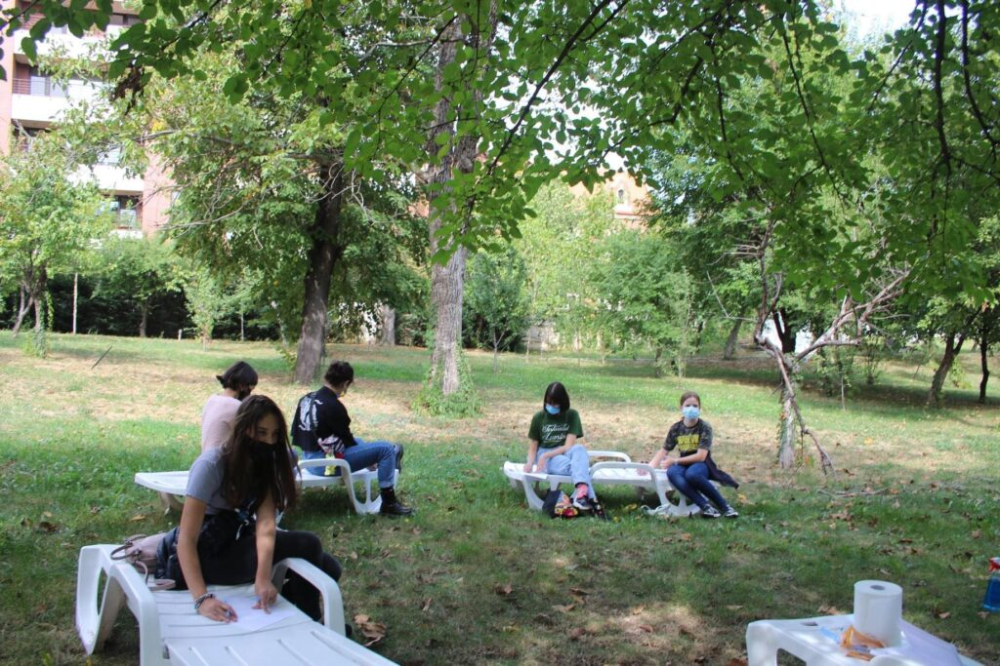

Un grup de cercetași, o Cabana fără pereți
Cabana Scout este unul dintre grupurile de cercetași ale Organizației Naționale „Cercetașii României" (scout.ro), înființat în 2014.
Activitățile sunt non-formale, în București, pentru copii și tineri de 7–24 ani. Ne vedem în fiecare sâmbătă, iar în vacanțe plecăm în natură: ture, drumeții, tabere, școli de iarnă.

🌱 Cercetășia completează familia și școala
Metodă veche de peste 100 de ani: legea și promisiunea, lucru în echipă, progres personal, învățare prin acțiune, viață în natură, cadru simbolic, sprijin adult. Vezi metoda →
🧣 Cine e cercetaș?
Copiii și tinerii cu min. 3 luni vechime, care au depus promisiunea și poartă însemnele (uniformă, eșarfă). După 24 de ani devin lideri — lucrători de tineret prin exemplu personal.
Cum ne organizăm
🗳️ Adunarea Generală
Forul de conducere al Centrului Local, care implementează obiectivele ONCR la nivel local.
- Ordinară în fiecare martie, extraordinară la nevoie.
- Vot: membri ≥16 ani, cu promisiune și cotizație la zi.
- Prima AG: 6 septembrie 2014. Ultima menționată: 30 septembrie 2023.
🧭 Consiliul Centrului Local
Conduce activitatea între Adunări. Mandat până în septembrie 2026.
- Ana — Secretar
- Ada — Comisar Internațional + Șef de centru (0722 322 978)
- Rareș — Responsabil Imagine
- Daria — Responsabil Comunicare
- Beni — Responsabil Financiar
🎓 Lideri
Lideri cu experiență, lideri în formare și ajutoare de lider.
- Lupișori: Mădălina, Maria
- Temerari: Nadia, Petrișor, Ada, Emi
- eXploratori: Adrian
- Seniori: Louise, Marius
Liderii îndrumă prin Metoda Scout; șeful de unitate coordonează programul anual. Vrei să fii lider? →
🛠️ Echipa de coordonare
Membri ai AG cu funcții asumate, în afara CCL:
- Asistent financiar — vacant
- Asistent Imagine și Comunicare — vacant
- Asistent Resurse Umane și Secretariat — Ana
- Asistent Proiecte și Programe — vacant
- Intendent — vacant
📄 Rapoarte de activitate
Publicăm aici rapoartele anuale (PDF) pe măsură ce sunt disponibile. Până atunci: cere un raport →